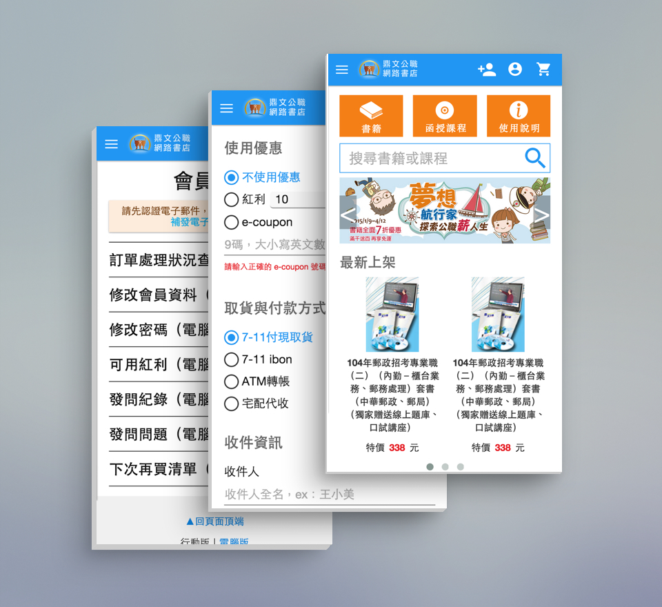
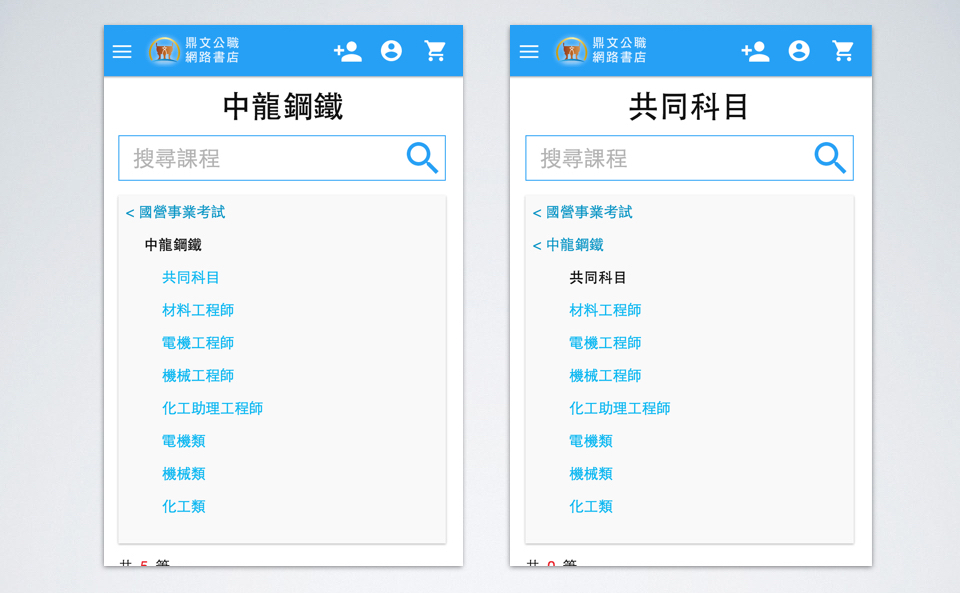
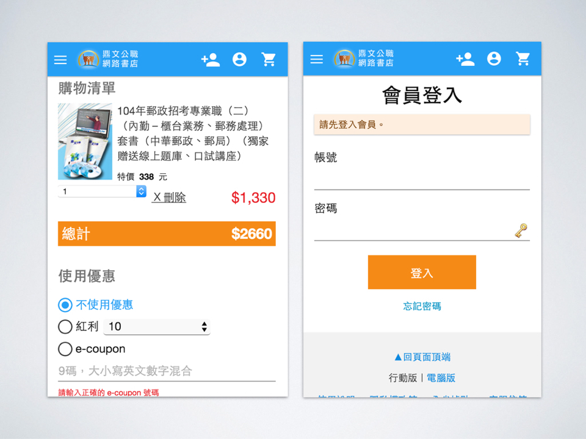
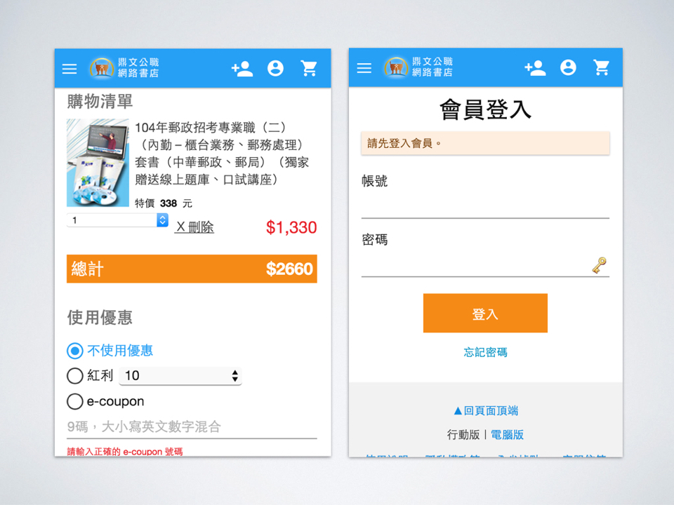

鼎文公職網路書店行動版
繼鼎文網路書店改版後，並評估行動上網購物訂單的成長量，因此決定進行網路書店行動版開發專案。第一階段製作範圍為商品、購物以及部份常用會員系統。
Case Study
導覽設計
商品分類的導覽設計為可收合，且分層分明的階級式選單。讓使用者可以清楚了解到目前的位置，也可以隨時跨類回到前兩層分類。
參考 Google Material Design 的風格與手持裝置操作性，進行行動版購物清單與會員登入的UI設計。


繼鼎文網路書店改版後，並評估行動上網購物訂單的成長量，因此決定進行網路書店行動版開發專案。第一階段製作範圍為商品、購物以及部份常用會員系統。
商品分類的導覽設計為可收合，且分層分明的階級式選單。讓使用者可以清楚了解到目前的位置，也可以隨時跨類回到前兩層分類。
參考 Google Material Design 的風格與手持裝置操作性，進行行動版購物清單與會員登入的UI設計。